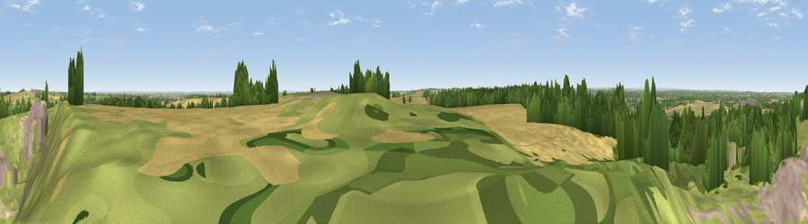

Golden Hill
#30389 in England · top 45% of its area beats it · near KirtonWhere it is
The exact computed spot (SK 69682 67702). Click the marker for map links.
The view, rendered

A 360° render of this exact spot computed from the terrain model, tree cover and land cover — summer colours, afternoon light, calibrated against photographs of famous viewpoints. Real trees, hedges and buildings will differ in detail.
The panorama
Grey silhouette: terrain skyline in each direction (720 bearings, Earth curvature and refraction included). Dashed green: skyline with trees (+15 m) and buildings (+8 m) as obstacles. Blue strip: how far the ground is visible on each bearing.
Where the view opens
Wedge length = distance to the farthest visible ground on that bearing (vegetation-aware). Rings at 10, 25 and 50 km.
What fills the view
36% woodland · 26% cropland · 25% grassland · 14% built-up
Angular shares of the visible panorama (visual magnitude), not map area. Landscape diversity 0.59 (0–1 Shannon).
Key numbers
More beautiful places nearby
The staircase of upgrades: each row has a higher view potential than everything closer. Driving times are estimates from straight-line distance, calibrated against real road routing — check an actual route before setting out.
| Place | Direction | Drive | Score |
|---|---|---|---|
| Willoughby Hill | NNE · 3 km | ~7 min | 59.0 |
| Burstheart Hill [Thoresby Colliery] | W · 6 km | ~13 min | 69.3 |
| Viewpoint near Maltby | NNW · 29 km | ~46 min | 70.8 |
| Crich Stand | WSW · 37 km | ~56 min | 73.0 |
| Alport Height | WSW · 42 km | ~62 min | 73.9 |
| Viewpoint near Wharncliffe Side | NW · 48 km | ~68 min | 75.2 |
| Viewpoint near Woodhouse Eaves | SSW · 56 km | ~78 min | 77.7 |
| Viewpoint near Mow Cop | W · 84 km | ~108 min | 78.9 |
53.20184, -0.95828 · source: dobih hill · position refined by local search. Computed location — check access rights before visiting.